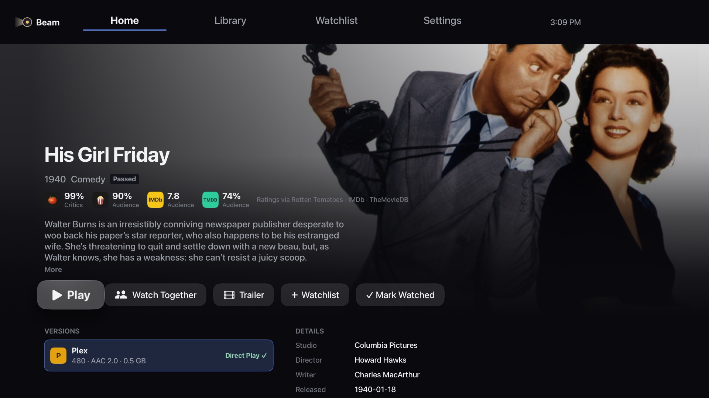
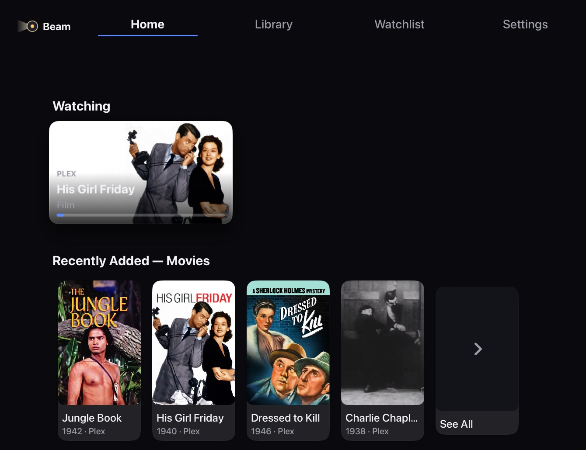
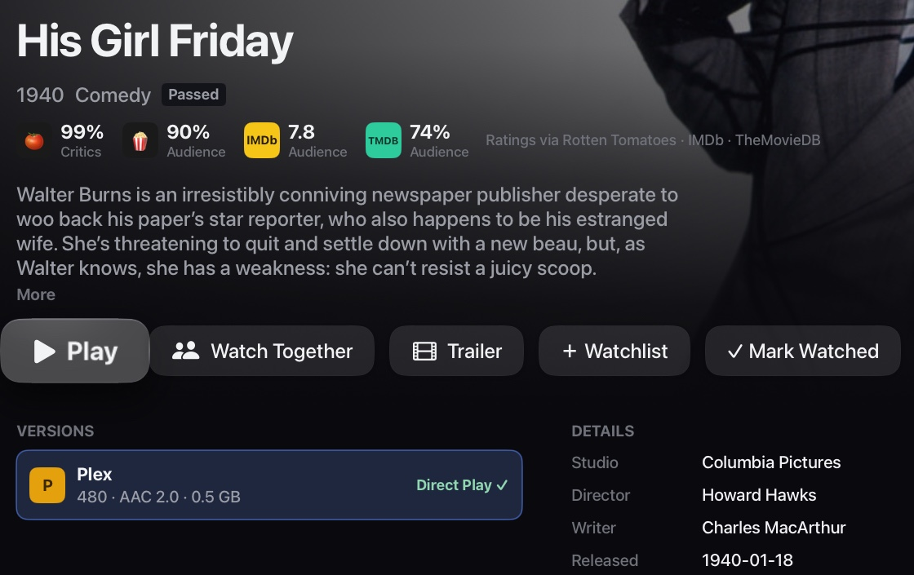

Plex · Jellyfin · Emby · Live TV
Your library,
in its best light.
BeamOS plays your Plex, Jellyfin and Emby libraries and your Live TV exactly as the files were made. 4K HDR, Dolby Vision and lossless surround sound, with no transcoding.
One week free, then from $3.99 a month. Setting up is always free.

Connect what you already have
- Plex
- Jellyfin
- Emby
- Plex Live TV & DVR
- Xtream Codes IPTV
Playback
Plays the file. Not a copy of it.
Most players ask your server to convert anything Apple TV can't open on its own. BeamOS carries its own playback engine, so the original file plays straight from your server, untouched.
- MKV and MP4: H.264, HEVC and AV1, in 4K
- HDR10, HDR10+, HLG and Dolby Vision, including UHD Blu-ray (profile 7) converted on the fly
- Lossless TrueHD and DTS-HD MA surround sound, played straight from the file
- Switches your TV to each title's frame rate and HDR format

Library
All your servers. One place to watch.
Connect as many Plex, Jellyfin and Emby servers as you like. BeamOS brings them together into one Home, one Library and one Search, with rich artwork, ratings and cast for everything.
- Continue watching across every server
- Ratings from Rotten Tomatoes, IMDb and TMDB
- Search titles, people and live channels at once
- Profiles for everyone in the house, with PINs
- Synced across your Apple TV, iPhone and iPad with iCloud

Made for the couch
It knows when to skip.
BeamOS finds intros, "previously on" recaps and end credits by itself, right on your Apple TV, even when your server has never marked them. Then it skips them, or offers to, your choice.
- Skip Intro, Skip Recap and Up Next on every show
- Subtitles from OpenSubtitles, in a couple of clicks
- Ask Siri to play a movie, a show or a channel
- Watch Together, in sync with friends

Live TV
A real TV guide for your channels.
Watch the antenna channels from your Plex server's tuner, add your own Xtream Codes subscription, or both. BeamOS turns them into one proper guide: fast to browse, even with tens of thousands of channels.
- Plex Live TV: your Plex tuner's channels, with no IPTV subscription needed
- Plex DVR recordings play straight from your library
- Full program guide that starts at what's on now
- Favorites, recents and your own categories, synced across your devices with iCloud
- Multiview: up to four channels, or a movie and the game, at once
- Pause and rewind live TV, then jump back to live
- Other Streams: switch to a channel's backup or HD feed
Illustration. BeamOS includes no channels; it works with your Plex tuner or your own provider.
Multiview
Your movie and the game, together.
Watching something from your library when kick-off comes round? Press the Live TV button in the player and BeamOS keeps your movie playing, right where you were, with live channels beside it.
- Mix library titles and live channels, up to four tiles
- Picture in picture, or an even grid
- Choose which tile you hear, and swap with a click
- Open any tile full screen, then come straight back
Listen on iPhone
One room. Two soundtracks.
The TV plays one tile's sound for the room. Open BeamOS on your iPhone and listen to any other tile on your AirPods, in sync with the picture. Catch the game while everyone else hears the movie.
- Your iPhone finds the Multiview on its own, over your Wi-Fi
- Pick a tile from the phone; no need to touch the TV remote
- Live channels and library titles both work
- Kept in time with the TV, with a fine-tune if you need it
Needs BeamOS on your iPhone, on the same Wi-Fi as your Apple TV. Works with AirPods or any headphones your iPhone uses.
Multiview on Living Room
Which channel?
Everything included
All of it, in every plan.
There's no cut-down version of BeamOS. Every plan unlocks every feature, on your Apple TV, iPhone and iPad.
Every HDR format
HDR10, HDR10+, HLG and Dolby Vision, with your TV switched to match each title. UHD Blu-ray Dolby Vision (profile 7) converted on the fly.
AV1 NEW
The newest streaming codec, decoded by BeamOS itself up to 1080p, and up to 4K in hardware on the latest Apple TV 4K. HDR10+ included.
Lossless surround sound
TrueHD and DTS-HD MA up to 7.1, played from the file. AC3, E-AC3, FLAC and Opus too.
Direct Play everything
BeamOS's own engine plays the MKV files Apple TV can't, so your server never transcodes.
Skip intros, recaps and credits
Found automatically on your Apple TV, even when your server never marked them.
Subtitles your way
Text and PGS subtitles, OpenSubtitles downloads, timing controls, your own style, and generated subtitles on tvOS 27.
Multiview
Up to four tiles at once: live channels, or your movie beside the game. Pick which one you hear.
Listen on iPhone
Hear another Multiview tile on your AirPods, in sync, while the room hears the TV.
Pause and rewind live TV
Missed the play? Rewind live channels, then jump straight back to live.
Watch Together
Play, pause and seek in sync with friends watching from the same server.
AI Upscaling
Sharper standard-definition video on Apple TV models that support it.
Siri
Ask Siri to play a movie, a show or a live channel, by name.
Profiles
Plex Home users with PINs, each with their own Home, history and Live TV lock.
Music too
Your Plex and Jellyfin music and playlists, right alongside your movies.
Top Shelf
Continue Watching right on the Apple TV Home Screen, before you even open the app.
Requests
Ask for missing movies and shows through Overseerr or Jellyseerr.
Synced with iCloud
Servers, sign-ins, profiles, Live TV favorites and settings follow you to every Apple TV, iPhone and iPad. A new Apple TV sets itself up.
Private by design
No ads, no tracking, no account with us. Your servers talk to your Apple TV, not to us.
Accessibility
Comfortable for everyone.
BeamOS follows the accessibility settings you've already chosen on your Apple TV.
- Larger Text, all the way to the biggest size in tvOS 27
- Your subtitle style: Large Text, Outline, Classic or your own
- Subtitles your Apple TV generates when a file has none (tvOS 27)
- Reduce Motion and Bold Text
Pricing
One week free. Then pick your plan.
Set up for free and see your own library working first. Every plan includes every feature.
Yearly
$34.99 / year
One week free, then $34.99 a year. Save 27% over monthly.
Start your free week- Apple TV, iPhone and iPad on your Apple Account
- Unlimited servers and profiles
- Live TV and Multiview
- 4K, HDR10+, Dolby Vision and AV1
- Lossless TrueHD and DTS-HD MA
- All future updates
US prices; the App Store shows yours in your own currency. Subscriptions renew automatically until cancelled in Settings › Users and Accounts on your Apple TV. Purchases are made through the App Store.
Technical specifications
What BeamOS plays.
| Containers | MKV, MP4, MOV, M4V, MPEG-TS (Live TV) |
|---|---|
| Video | H.264 (AVC), H.265 (HEVC, including hev1), AV1 (8- and 10-bit), MPEG-2 and VC-1 via your server |
| HDR | HDR10, HDR10+ (HEVC and AV1), HLG, Dolby Vision profiles 5 and 8, and profile 7 (UHD Blu-ray) converted to 8.1 on the fly |
| Audio | TrueHD, DTS, DTS-HD MA, AC3, E-AC3, AAC, FLAC, Opus, MP3, MP2, PCM |
| Subtitles | SRT, WebVTT, SSA/ASS (text), MP4 timed text, PGS, plus OpenSubtitles downloads |
| Media servers | Plex, Jellyfin, Emby |
| Live TV | Plex Live TV & DVR (a tuner such as HDHomeRun in your Plex server); Xtream Codes accounts with XMLTV guide data |
| Requests | Overseerr, Jellyseerr |
| Requirements | Apple TV HD or Apple TV 4K with tvOS 18 or later; iPhone or iPad with iOS or iPadOS 18 or later. Larger Text and generated subtitles need tvOS 27; AI Upscaling needs a supported Apple TV 4K. AV1 plays up to 1080p in software, and up to 4K on Apple TV models with AV1 hardware. Listen on iPhone needs your iPhone on the same Wi-Fi as the Apple TV. |
Community
Help shape BeamOS.
Join the BeamOS forum to report a problem, suggest a feature, vote on what comes next, or just talk about your setup.
Announcements
New releases and what's in them.
Report a Problem
Something not playing right? Tell us the title, the server and what happened.
Suggestions
Share ideas and vote on the features you want next.
General
Setups, tips, servers, and everything else.
Get new releases by email
Hear about every new version of BeamOS, and every beta, as soon as it's out.
- Create a free forum account with your email.
- Open Announcements and choose Watching First Post.
- That's it: each release arrives in your inbox.
Using the app? You can also send a report straight from Settings › About › Send Feedback.
Questions
Good to know.
Does BeamOS come with any movies, shows or channels?
No. BeamOS plays media from servers and subscriptions you already have: your own Plex, Jellyfin or Emby server, and your own IPTV provider.
Will my server have to transcode?
Almost never. BeamOS plays the original file wherever your Apple TV can show it, including MKV with lossless audio. Transcoding is only a last resort, for formats no Apple TV can decode.
Can I try it before paying?
Yes. Setting up is free, so you can connect your server and see your library first. The yearly plan then starts with a free week.
Which devices does BeamOS run on?
Apple TV, iPhone and iPad today, with more on the way. One purchase covers them all. Your servers, profiles and settings sync between them with iCloud.
Does Plex need a Plex Pass?
No. BeamOS works with any Plex account. Plex Live TV & DVR is the exception: Plex requires a Plex Pass and a tuner on the server for that. Some other features, like streaming from outside your home, depend on your server owner's Plex setup.
Do I have to set it up on every device?
No. With iCloud sync on, your servers, sign-ins, profiles, Live TV favorites and settings follow you to every Apple TV, iPhone and iPad signed in to the same Apple Account. You choose what syncs in Settings › About & Sync.
What do you collect?
Nothing about your library. There are no ads, no analytics and no tracking. Read the privacy policy.
Ready to press play?
Your library has never looked or sounded this good on Apple TV.